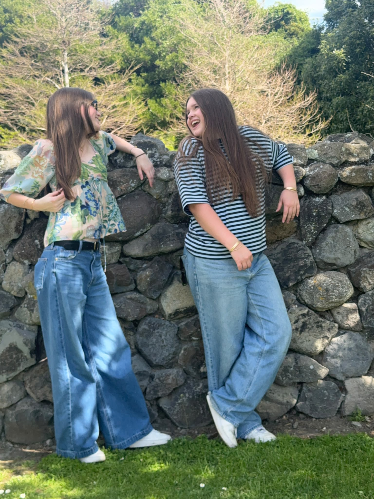
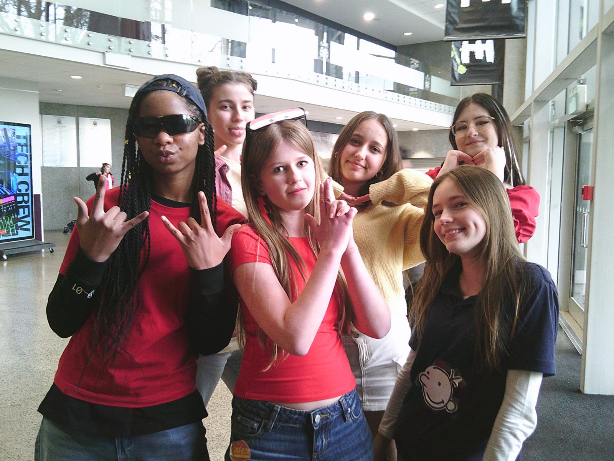
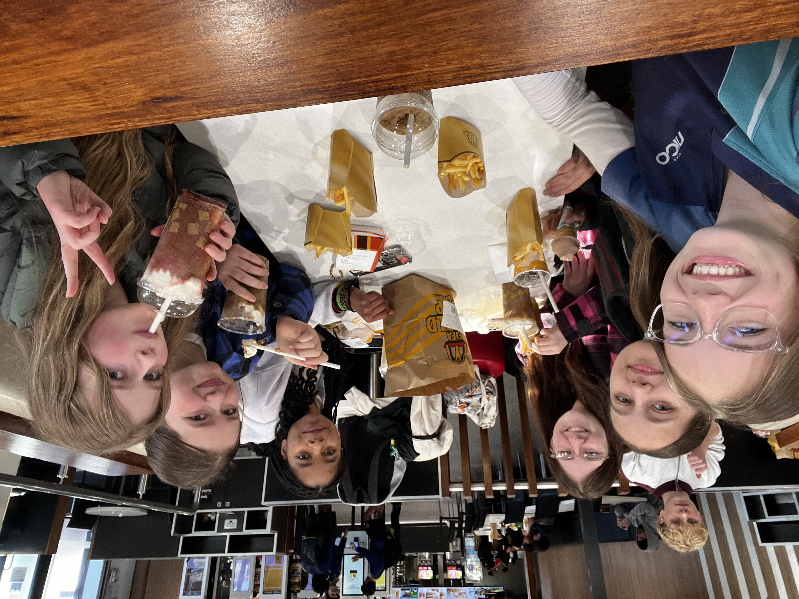
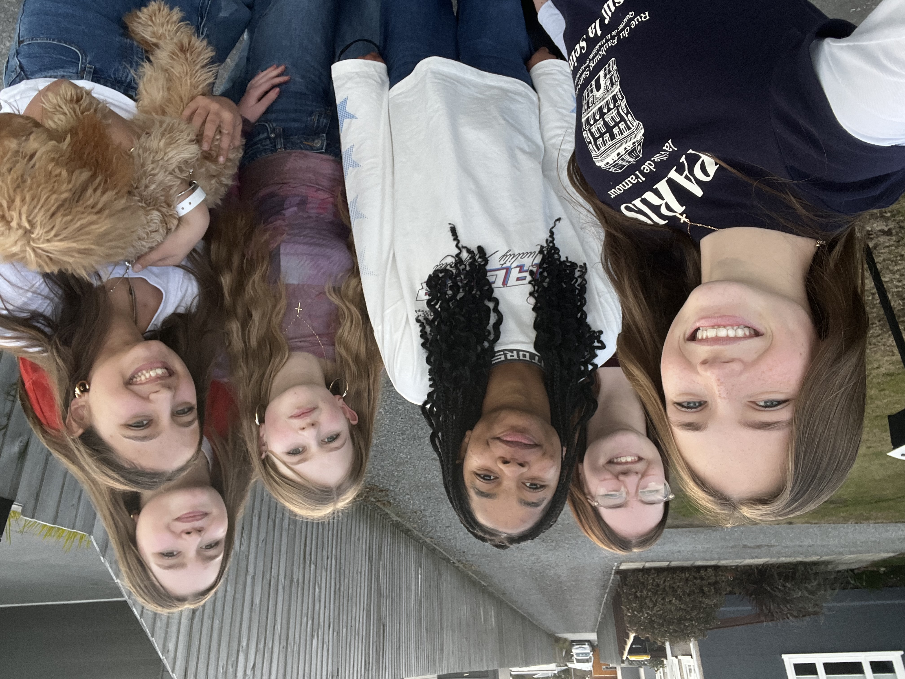
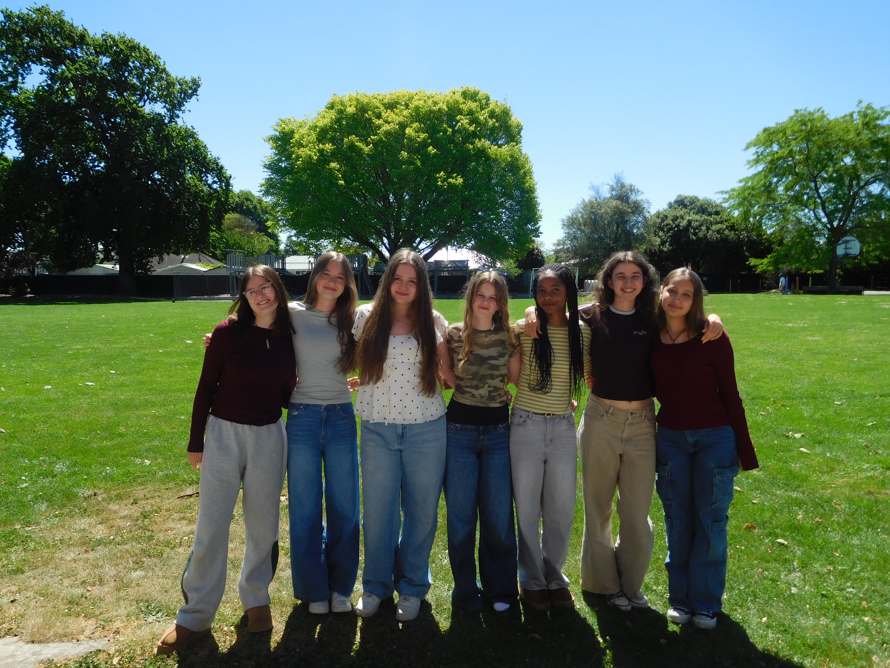
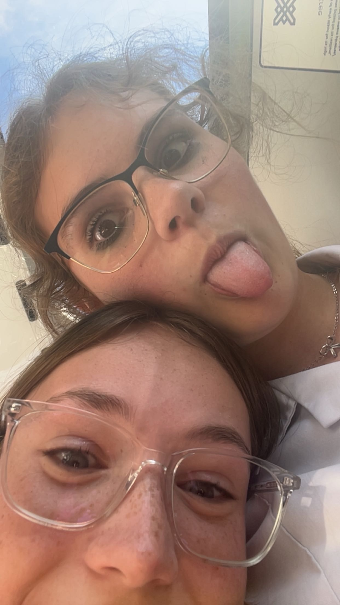
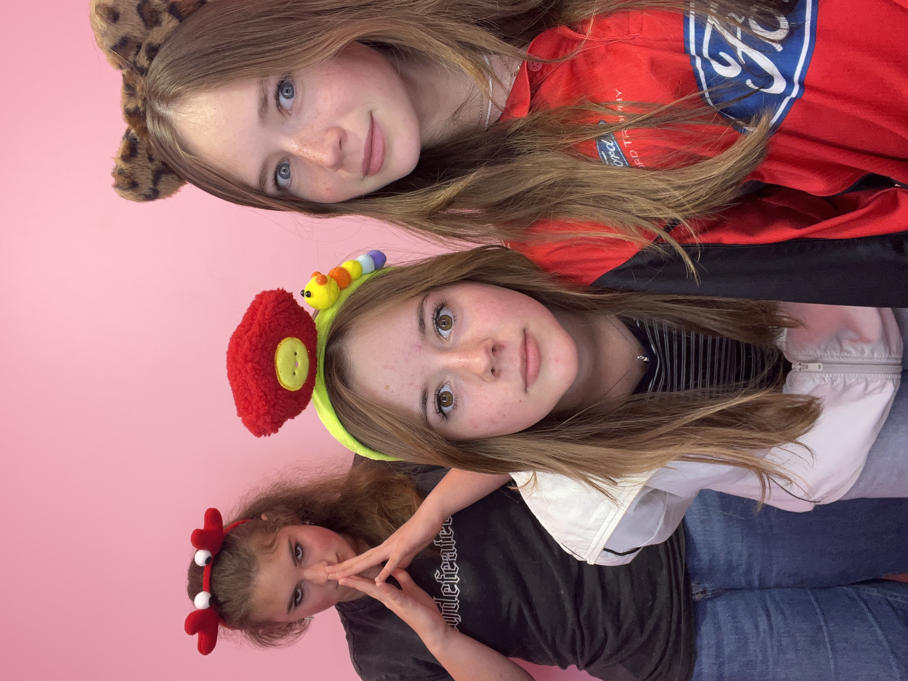
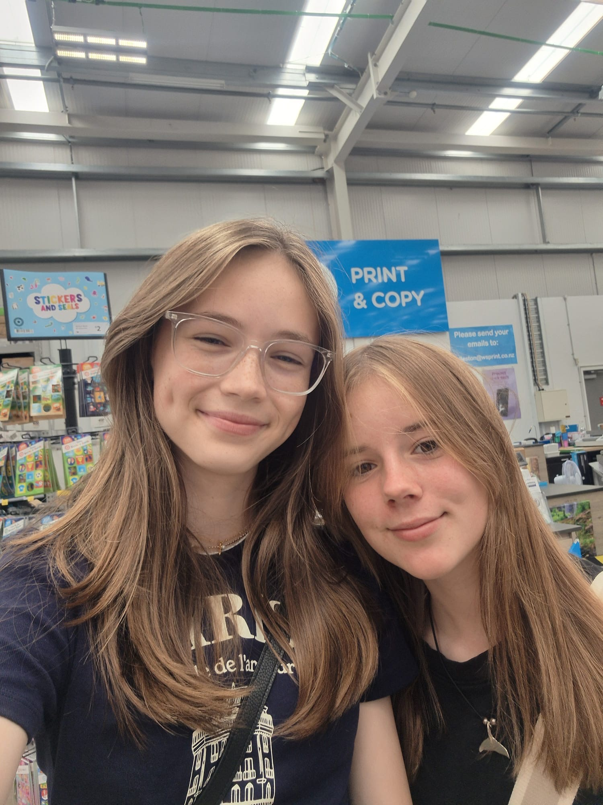

Welcome to my friends page! My friends are a big part of my life, and I'm lucky to have some amazing people around me. I enjoy spending time with them both at school and outside of school, whether we're going out, having a laugh or just hanging out together. Some of my favourite memories come from the time I spend with my friends, and I'm grateful for all the fun and experiences we share. This page includes photos of some of my closest friends and a few of the memories we've made along the way. Take a look around to meet some of the people who make my life that little bit more special!
-------------------------------------------------------------------------------------------------------------------------------------------





Some of the most special friendships I've made are with the girls I met at Middleton Grange: Chloe, Kaelyn, Chalise, Avi, Anna and Ella. Since meeting them, they've become such an important part of my life, and I'm so grateful to have them around me. We've shared so many laughs, made countless memories and experienced so much together. They make even the ordinary days more enjoyable, and I know I can always count on them. I'm really lucky to have met such amazing girls, and I hope we continue making many more memories together. They all hold a very special place in my life!
---------------------------------------------------------------------------------------------------------------------------------------------



Carla and Amber are two of my closest friends, who I met in 2023.
Since then, they've become my best friends, and I'm so grateful to
have them in my life. We've shared so many special memories,
laughs and experiences together, and they've been there for me
through so much. In these photos are Carla and Amber, two girls who
mean so much to me. I'm lucky to have friendships that mean so much,
and I couldn't imagine my life without them!